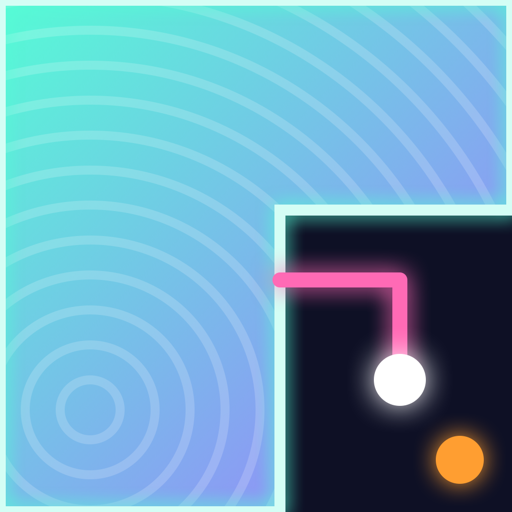

Neon Claim
Risque. Feche. Conquiste.
iPhone · Beta no TestFlightO jogo
Neon Claim é um arcade de conquista de território. Arraste o dedo para sair da borda, risque o campo e volte para fechar uma área. Cada pedaço conquistado revela parte de uma imagem escondida. Conquiste a porcentagem pedida para passar de fase, mas cuidado: se um inimigo tocar o seu risco, você perde uma vida.
Destaques
- Controle com um dedo, em retrato, em partidas de poucos minutos.
- Inimigos com comportamentos diferentes: o que quica, o caçador que persegue o seu risco, o que se divide e a faísca que corre pela borda.
- Power-ups: congelar, turbo, escudo e vida extra.
- Combos para áreas grandes e cadeias de conquistas rápidas.
- Imagens geradas por código reveladas a cada fase, e fases cada vez mais desafiadoras.
- Visual neon, trilha chiptune e vibração a cada conquista.
- Sem anúncios, sem contas e sem coleta de dados.
Suporte
Dúvidas ou sugestões: rinaldosjr@gmail.com · Política de Privacidade
The game
Neon Claim is a territory-claiming arcade game. Drag a finger to leave the border, draw across the field and come back to close off an area. Every piece you claim reveals part of a hidden picture. Claim the required share to clear the level, but watch out: if an enemy touches your line, you lose a life.
Highlights
- One-finger control, portrait, runs of a few minutes.
- Enemies that behave differently: the bouncer, the hunter that chases your line, the splitter and the spark that runs along the border.
- Power-ups: freeze, turbo, shield and extra life.
- Combos for big claims and chains of quick ones.
- Procedurally drawn pictures revealed each level, with levels that keep getting tougher.
- Neon visuals, a chiptune soundtrack and haptics on every claim.
- No ads, no accounts and no data collection.
Support
Questions or ideas: rinaldosjr@gmail.com · Privacy Policy